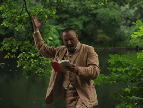

Ein Gespenst geht um in Europa
A Spectre is Haunting Europe
Julian Radlmaier – Deutschland 2012 – 48 Min. 
B: Julian Radlmaier – K: Ágnes Pákozdi – S: Julian Radlmaier, Tatjana Kononenko – P: dffb
Mit Gio Korkashvili, Zurab Rtveliasvili, Jan Bachmann, Katja Weilandt u.a.
Digital – deutsch
Preis der Deutschen Filmkritik 2013
Berlin, a summer in the age of neoliberalism: the spectre of the soviet avant-garde is haunting the city. A young Georgian contract-worker is surprised to find the ghost of the Russian revolutionary poet Vladimir Mayakovsky in his kitchen. At the same time, his friend Kasimir inherits a big fortune, but what shall he do with all this money? Framed by a travel through time leading to Flaubertʼs 19th Century und the shooting of a revisionist melodrama for German television, the film follows the adventures of these three characters in contemporary Berlin. A suprematist digital comedy about the transmission of emancipatory energies. – dffb
Saturday 11/10 9.30 p.m. Werkstattkino –
Guest: Julian Radlmaier
Julian Radlmaier (1984, Germany) studied Film and Art History in Berlin and Paris, and then worked as an assistant director for Werner Schroeter. He also edited and translated the theoretical writings on film by the French philosopher Jacques Rancière. In 2009, he started with a directing course in Berlin. A Proletarian Winter's Tale (2014) is his first feature film.
Films: The Tramp 2010 – Der Aufstand der Plebejer 2010 –Ein Gespenst geht um in Europa 2013 – Ein proletarisches Wintermärchen 2014 (9. UX)